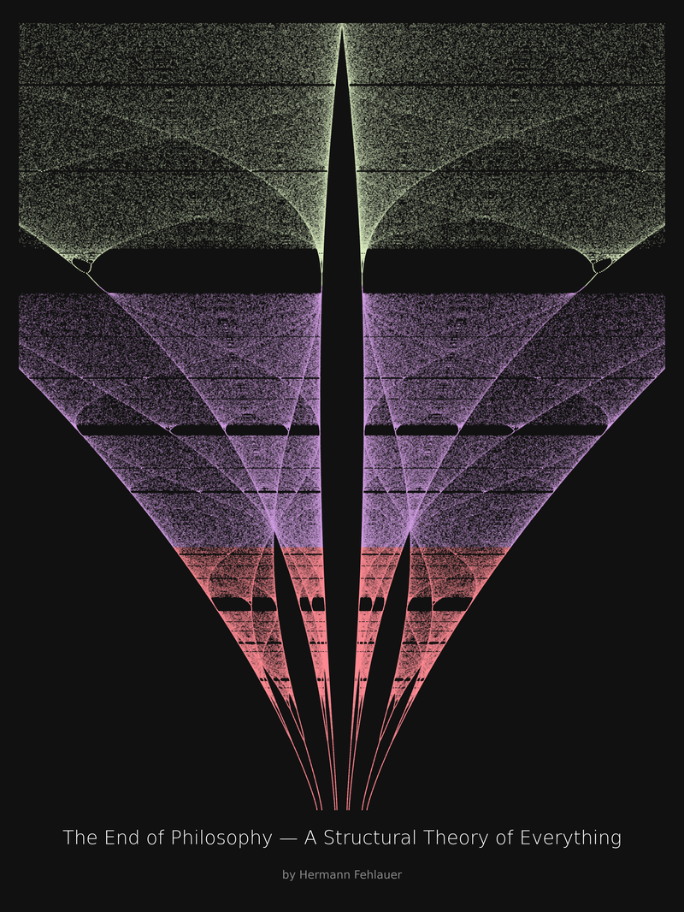

The Filtered Observer
Every fact you know is a subtraction from reality. "Objectivity" is an illusion formed by consensus. Excluded variables accumulate as ontological debt, inevitably triggering Murphy's Law and Black Swan events.
The minimal framework that integrates the patterns of failure and order across all domains. From quantum mechanics to organizational psychosis, the underlying architecture is identical.

I am a debugger. Not a software developer in the usual sense. I am the person who gets called when the illusion of control finally shatters.
I inherit systems built by people who have long since burned out. I work with what exists, not what should exist. My job is to find the lines of code, the one false assumption, the one political decision made years ago that is now causing the entire architecture to fail.
Doing this work year after year, I started seeing the exact same patterns everywhere. Organizations do not make different mistakes. They make the exact same mistakes, just wearing different costumes. The way a team fractures under pressure is structurally identical to how a cell divides or a wave function collapses.
The Zero Pattern documents that recognition. It provides a vocabulary precise enough to map the madness. It is not a "theory of everything" promising spiritual convergence. It is a strictly falsifiable mapping of how unity fractures into multiplicity, how filters corrupt the observer, and how the mathematics of chaos govern the human ego just as precisely as they govern fluid dynamics.
Every fact you know is a subtraction from reality. "Objectivity" is an illusion formed by consensus. Excluded variables accumulate as ontological debt, inevitably triggering Murphy's Law and Black Swan events.
Why do smart people in groups make insane decisions? Discover how corporate hierarchies act as psychological immune systems, filtering out truth and using junior workers as thermodynamic crumple zones.
A conceptual particle accelerator testing reality's boundaries. We map the exact points where biological growth, computational irreducibility, and logical limits catastrophically tear and reveal the source code.
Tracing the exact same structural geometry across Botanical Morphogenesis, Wolfram's Computation, Gödel's Incompleteness, Cosmological Event Horizons, and Quantum Entanglement.
How the constants of reality govern constraints. The Feigenbaum limit (δ), the Golden Ratio (φ), and the Silver Ratio (σ) dictating the strict thermodynamic costs of bifurcation and projection.
The manual for Root Access. Stop trying to run complex reality on the limited UI of the conscious ego. Learn the physical protocols to manage topological friction and achieve cognitive superfluidity.